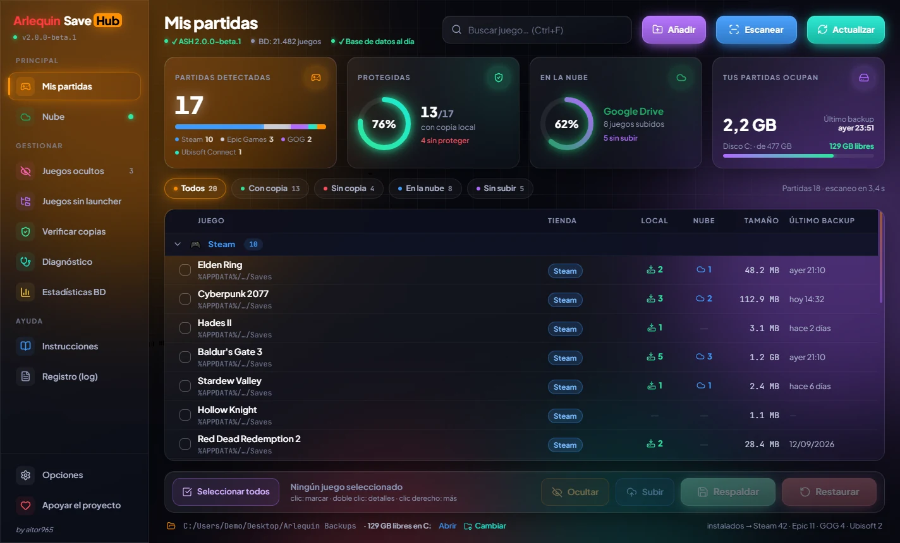

Que perder una partida guardada deje de ser un problema
Arlequin SaveHub localiza, respalda y restaura las partidas guardadas de tus juegos de PC en Windows. Gratis y de código abierto.
Para Windows · Sin instalación · Sin publicidad ni seguimiento

¿Aparece "Windows protegió su PC"? Es normal en programas nuevos sin firma digital: pulsa Más información → Ejecutar de todas formas. Cómo comprobar que es el original
Firma de código en trámite: hemos solicitado la firma gratuita para Windows de SignPath.io, con certificado de SignPath Foundation. Cuando se apruebe, el aviso de Windows irá desapareciendo.
Arlequin SaveHub 2.0 beta
Una interfaz completamente nueva, oscura y con los colores de siempre. Por dentro, el mismo motor probado de la 1.1.9.
Ventana nueva
Tarjetas de resumen con anillos de progreso: partidas detectadas, protegidas, en la nube y espacio que ocupan.
Tabla más clara
Juegos agrupados por tienda, filtros de un clic, orden por columnas, búsqueda y menú con clic derecho.
Espacio en disco
Ves de un vistazo cuánto espacio libre queda en el disco donde guardas los backups.
Nube con color
Google Drive en verde, OneDrive en azul cielo y Dropbox en azul intenso. Subir, descargar y sincronizar desde un panel.
Opciones rediseñadas
General, Local y Nube en pestañas, con interruptores y selectores de juegos excluidos.
A tu medida
La ventana se adapta a la pantalla donde se abre y recuerda su tamaño. Barra de título oscura en Windows 10 y 11.
La 2.0 es una beta: usa los mismos datos y la misma configuración que la 1.1.9, así que puedes probarla y volver cuando quieras.
Nuevo en la beta 4 · Español e inglés: ASH usa el idioma de tu Windows (o el que elijas en Opciones → General → Idioma).
Beta 3 · Medidor de rendimiento: mira en vivo la CPU, la RAM, el disco y la red que usa ASH, con gráficas de los últimos minutos.
Ayuda a mejorar Arlequin (opcional): se ofrece la primera vez que abres la 2.0 y puedes cambiarlo cuando quieras en Opciones. ASH comparte de forma anónima las rutas de guardado que descubre para juegos que la base de datos aún no conoce. Se comparan con las de otros usuarios para ampliar las bases de datos de juegos de Arlequin. Qué se envía.
Novedades de versiones anteriores
1.1.9
- Tabla de juegos con columnas (tienda, copias locales y en la nube, tamaño, último backup), grupos plegables y orden por columna.
- Buscador, filtro y clic derecho en cada juego para respaldar, restaurar, abrir sus carpetas o subirlo a la nube.
- Nube más ligera: el índice de copias se guarda en caché y solo se sube cuando hay algo nuevo.
- Corrección importante para los juegos con una sola copia local.
1.1.8
- OneDrive y Dropbox: además de Google Drive. ASH solo puede usar su propia carpeta (
Aplicaciones/Arlequin SaveHub), nunca el resto de tus archivos. - Google Drive para todos: ya no hace falta pedir acceso ni vuelve a caducar cada semana.
- Subidas y descargas más robustas: las subidas cortadas continúan donde se quedaron y cada descarga se verifica con SHA-256.
Qué hace
Todo lo necesario para no volver a perder horas de juego.
Detecta tus juegos
Steam, Epic, GOG, Battle.net, Ubisoft Connect, EA app, Amazon Games, Xbox y juegos sin launcher.
Sabe dónde guardan
ArlequinGameDB conoce las rutas de guardado de miles de juegos, con sus IDs de tienda y nombres alternativos.
Copias versionadas
La copia actual más un historial con fecha, y el máximo de copias por juego que tú elijas.
Registro de Windows
También respalda los juegos que guardan la partida en el registro, como muchos clásicos y juegos Unity.
Restauración segura
Vista previa, comprobación SHA-256 y copia "Antes de restaurar" para deshacer si te equivocas.
En tu nube
Sube tus copias a tu Google Drive, OneDrive o Dropbox y elige qué copia recuperar. ASH solo accede a su propia carpeta.
Automático
Respaldos periódicos o al cerrar el juego, con detección de crash para no guardar un save dañado.
Pensado para jugar
Se aparta mientras usas el PC o tienes OBS abierto, y te avisa solo si algo falla.
ArlequinGameDB v1.4
Una base de datos propia, solo para Windows, que el programa actualiza automáticamente.
Basada en Ludusavi Manifest (licencia MIT), PCGamingWiki y Steam, adaptada y ampliada para Arlequin SaveHub.
Cómo usarlo
En cinco minutos tienes tus partidas a salvo.
- Descarga
Arlequin_SaveHub.exe(o la 2.0 beta) y ábrelo. - La primera vez, elige dónde quieres guardar los backups.
- Espera a que termine el escaneo: verás tus juegos agrupados por tienda.
- Marca los juegos y pulsa Respaldar o Restaurar.
- En Opciones activa los respaldos automáticos y, si quieres, la nube.
❤️ Apoya Arlequin SaveHub
Arlequin es gratuito y open source. Si te resulta útil, puedes ayudar a seguir mejorándolo y manteniendo la base de datos.